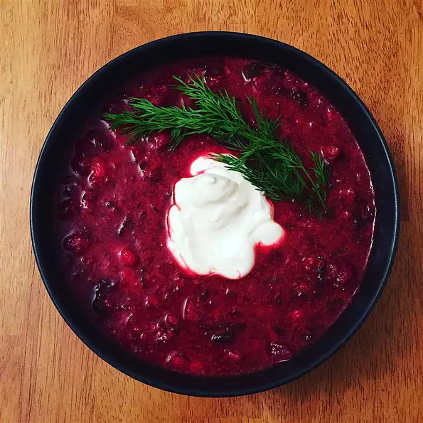

Vegan Borscht
Vegan Borscht

Description:
A vegan version of a traditional Russian/Ukranian soup.
Ingredients:
- 1 tablespoon olive oil
- 3 cloves garlic, minced
- 1 onion, chopped
- 3 tablespoons olive oil
Steps
- Step 1
Heat 1 tablespoon of olive oil in a skillet over medium heat. Stir in the garlic and onion; cook and stir until the onion has softened and turned translucent, about 5 minutes. Set aside. Heat the remaining 3 tablespoons of olive oil in a large pot over medium-high heat. Stir in the celery, carrots, bell pepper, beets including the greens, whole tomatoes, diced tomatoes, potatoes, Swiss chard, and the onion mixture. Cook and stir until the chard begins to wilt, 4 to 8 minutes. Stir in the vegetable broth, water, dill weed, and salt and pepper. Bring to a boil, and reduce heat to low. Simmer for 1 hour.
- Step 2
Strain half the beets from the broth and place in a blender, filling the pitcher no more than halfway full. Hold down the lid of the blender with a folded kitchen towel, and carefully start the blender, using a few quick pulses to get the beets moving before leaving it on to puree. Add the tofu, and continue pureeing until smooth. Stir the tofu mixture back into the pot. Simmer until the mixture is reduced by a third, about another hour. Serve chilled or warm.